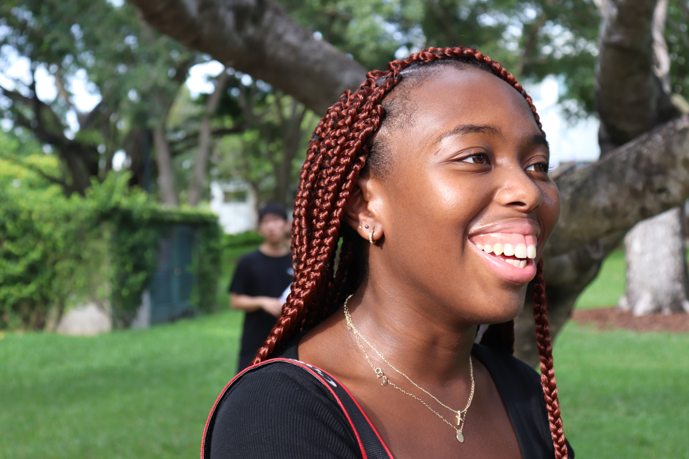

T. Pierre
A videopgrapher, aspiring filmmaker and screenwriter with significant experience in independent filmmaking, editing, and producing original content for clients. Currently a junior pursuing a Bachelor's degree in Motion Pictures & Screenwriting at the University of Miami with a minor in Business Law. Very active in many extracurricular activities as well as different social movements and community based organizations that serve the Greater Miami area.
Education
| Institution | Year |
|---|---|
| PACE High School | 2012-2016 |
| Barry University | 2016-2018 |
| University of Miami | 2018-present |
Technical Skills & Interests
- Film & TV Content Critic
- Significant experience in photography, more specifically with digital, film & pinhole cameras
- Proficient Video Editing Skills on programs such as Final Cut Pro, Avid, & Adobe Premeire Pro.
- Extremely strong in videography & handling of all camera classes from Canon 6D EOS to AVC cameras like the Panasonic 4k Ultra Video UX Series
- Completed a screenplay for both an original TV series & an original movie, as well as having written a script for an exisiting TV show
- Experienced in using Excel and Quickbooks to create spreadsheets and organize finances for business.
Work Experience
- Volunteers as a videographer and content editor at Vous Church since June 2018
- Work Study Office Assitant at the Center for Haitian Studies, specializing in background checks and organizing of office files & finances since May 2017
- Volunteered as a Summer Camp Counselor from June 2012 to July 2015
- Emerging Leaders Chair of the Democratic Haitian Americans Caucus of Florida
- Contributing Writer for the Buccaneer Newspaper January 2018 to June 2018
Contact
T. PierreUM School of Communication
5100 Brunson Drive
Coral Gables, FL
Thanks for reading all about me!
Please feel free to reach out!
tep32@miami.edu